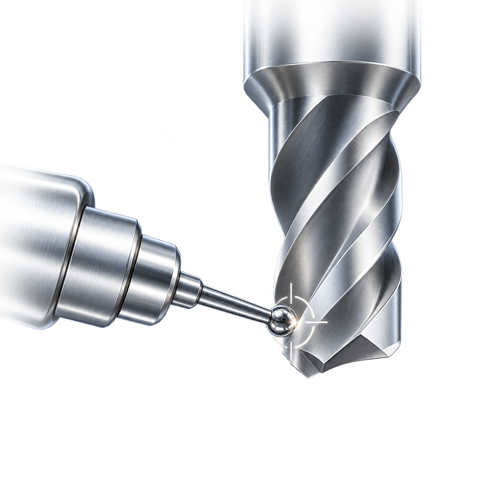
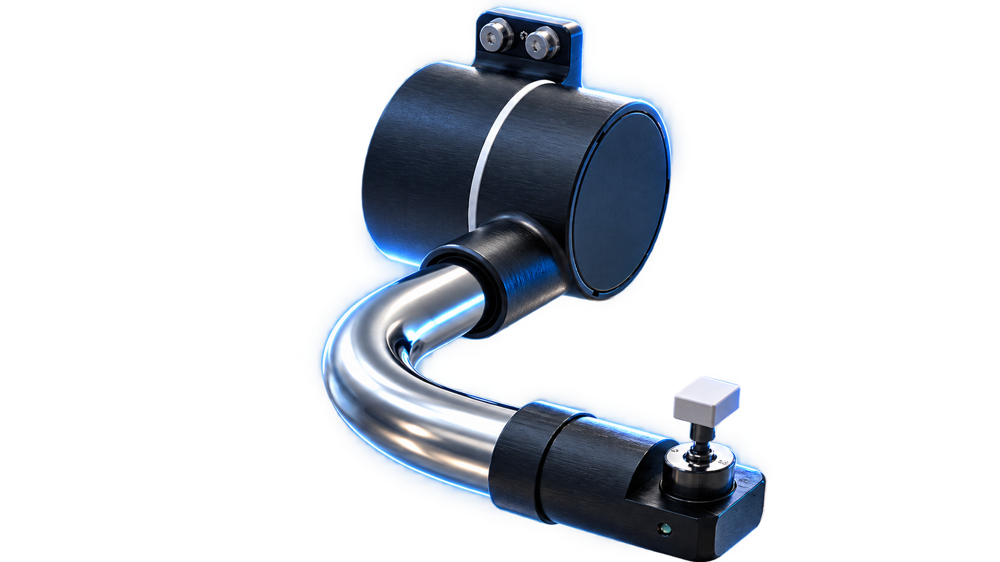
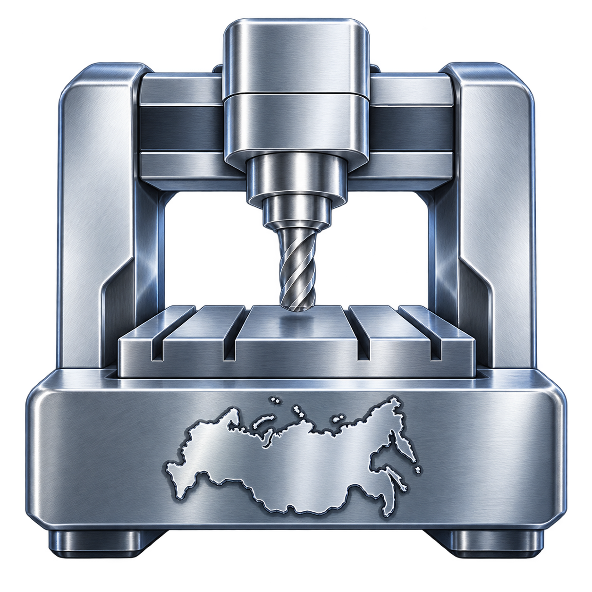
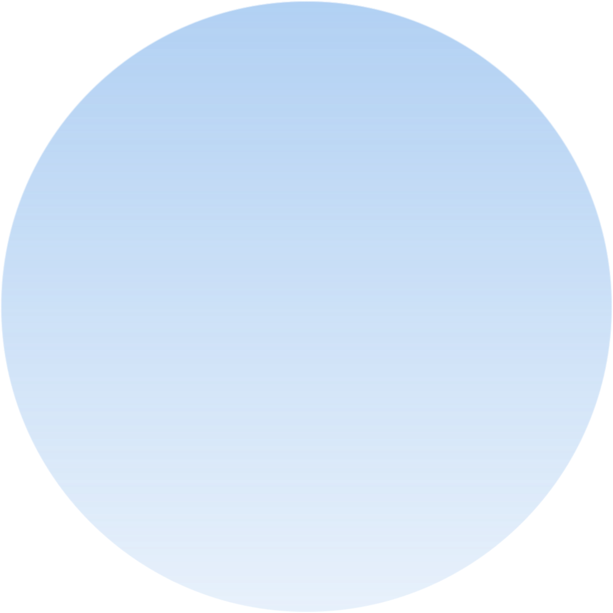
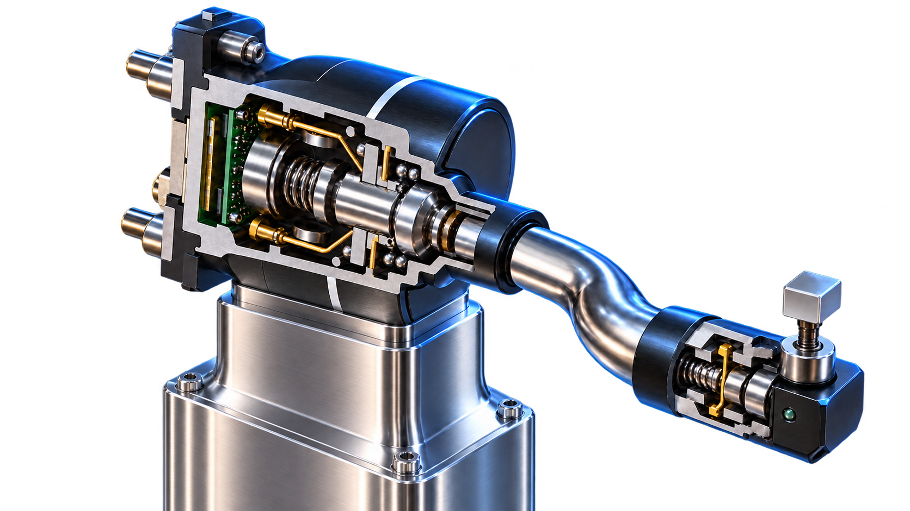
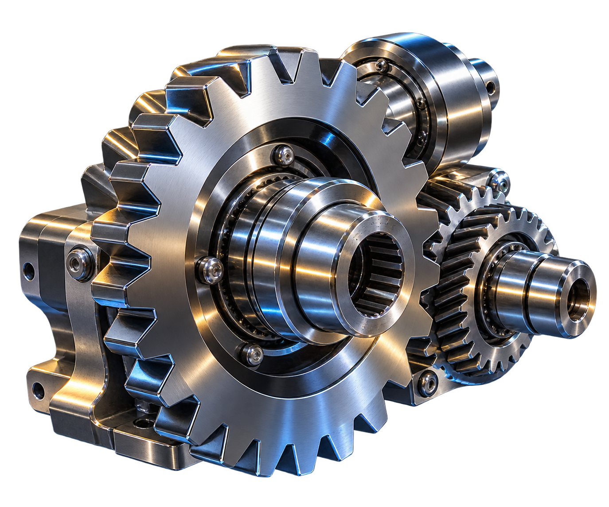
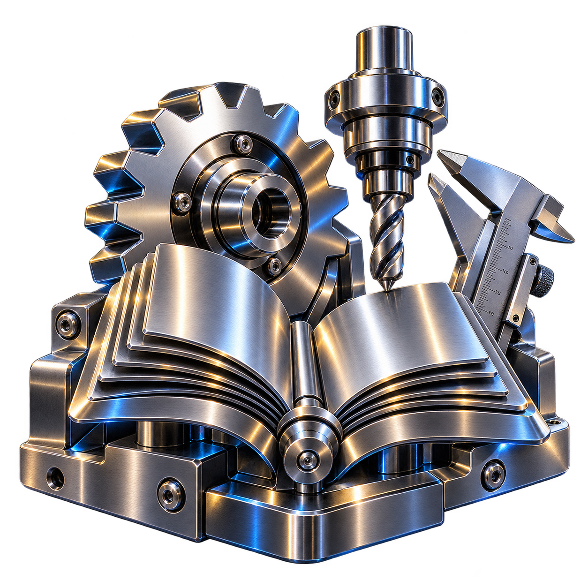
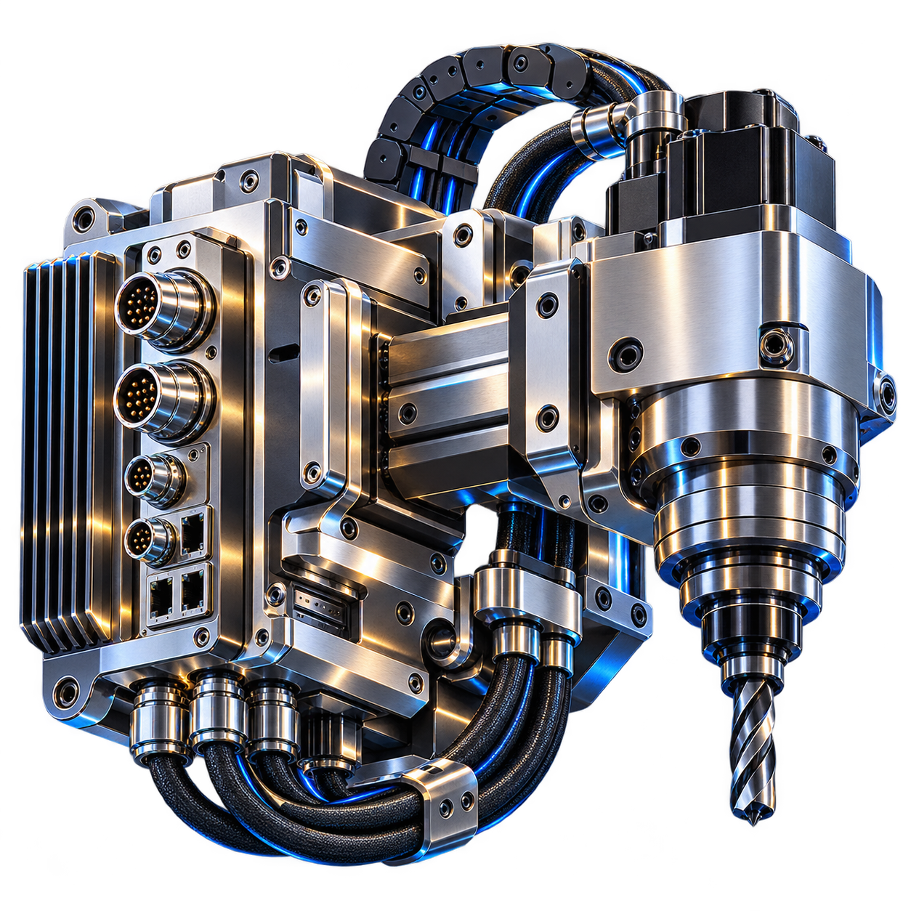
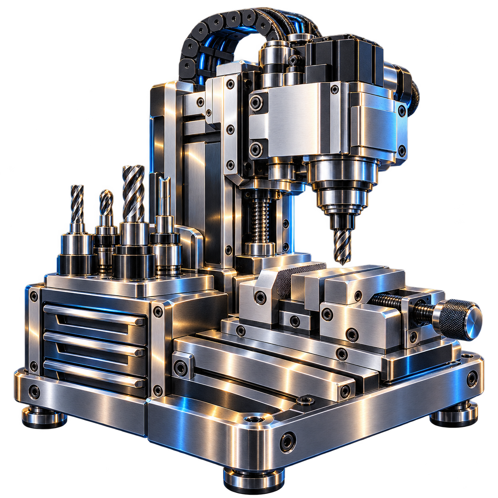

1 мкм
точность измерения инструмента нашим датчиком


/ о проекте
точность измерения инструмента нашим датчиком

станков в России ждут оснащения измерителями

экономии против дорогих импортных аналогов
/ как работает датчик


Инструмент касается измерительного щупа
Один из стержней отклоняется и разрывает цепь
Датчик срабатывает — оператор вносит корректор
/ для кого подойдет
Серийное и единичное производство деталей, где важна точность от 10-го квалитета и выше, а брак обходится дорого

Обучение операторов ЧПУ на реальных станках с настоящей измерительной оснасткой, а не на тренажёрах и симуляторах

Модернизация станочного парка и установка измерительных систем под ключ, включая настройку и обучение персонала

Единичные заказы и мелкосерийное производство, где ручная наладка занимает слишком много времени
